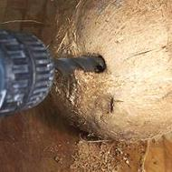
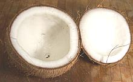
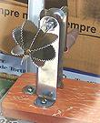
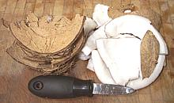
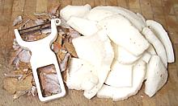
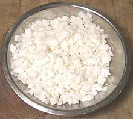
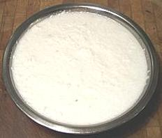
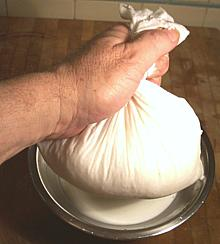
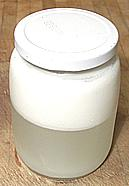

It's best made from a mature brown coconut, but one that's still fresh enough to have more than a cup of water in it - it should be heavy with plenty of slosh. In a mature coconut the flesh will be at its thickest and sweetest and contain plenty of oil for coconut cream.
See our Coconut Page for more on
Coconuts.
 Here we have a nice fresh brown coconut. It weighed just over 2 pounds and contained 1-1/3 cup of water. Note that the eyes show no sign of moisture - moist eyes indicate a rotten coconut.
First you drain out the water. I drill out an eye using an electric
drill motor fitted with a 3/8 inch drill bit. Those without a drill motor
handy can punch out an eye or two using a hammer and a #2 or larger
phillips screwdriver or some similar object. The water should be almost
perfectly clear and colorless - any color indicates a spoiled coconut.
  Bake the coconut in an oven preheated to 350°F/177°C for 20 minutes. This is optional but will make it much easier to remove the flesh from the shell, and will probably split the shell making it much easier to open the coconut. The coconut in the photo was cracked almost all the way around and just needed a hammer tap to split it open. Of course you're going to want to use the hammer to break the halves up into smaller pieces so you can more easily pry the flesh off the shell.
Note: If you have an Indian hand cranked coconut grater
like the one in the photo, you can skip the next few steps. This device
grates the coconut right out of the half shell right down to the brown
layer - though an Indian lady with experience says they are not easy
to use.

Next pry the flesh from the shell. The photo shows the pile of shell
pieces to the left and a pile of coconut flesh on the right. Note the
flesh comes out with a brown coating on one side. In front is the oyster
knife used to pry out the flesh. An even better tool is a somewhat dull
1/2 inch wide wood chisel, especially better if you haven't baked the
coconut. For both the oyster knife and the chisel the beveled side goes
against the shell.

Now you need to peel off the brown coating from the back side of the
pieces of flesh. A vegetable peeler is the best tool, and a sharp kitchen
knife to remove the backing from pieces too small or awkward for the
peeler. This coconut, weighing just over 2 pounds, yielded 13 ounces of
peeled flesh.


Cut the pieces of flesh into thin strips and then cut crosswise into very
small pieces. Put these in your food processor with the sharp metal blade
and 1-1/2 cups of hot water. The water should be quite hot but not
boiling hot. Process until the coconut is as fine as you can get it,
then let the slurry rest for about 1/2 hour.

Line a strainer with clean muslin and pour the coconut slurry into it.
Gather up the cloth and squeeze it out as dry as possible, twisting it
for added pressure. Actually I'm using a "separator bag" purchased from
an Asian market rather than just a flat piece of cloth, but the flat
piece will work fine.
 Now it's done - 2 cups of fresh coconut milk and a pile of fiber almost completely devoid of any flavor. Refrigerate the milk immediately and use it within about 3 days - coconut milk spoils rapidly. Compost the fiber. Of course your coconut milk will separate with the cream floating to the top just like it does in the can. Shake vigorously to remix it, or you can skim off the cream if you just want that part.
In many Asian recipes the cream is scooped off and used as the oil to
fry other ingredients in, The thin liquid is stirred in later with other
liquids and ingredients.